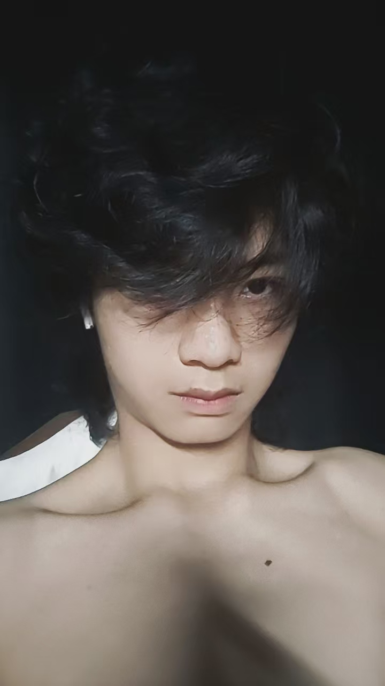
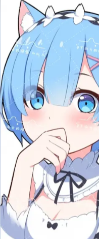
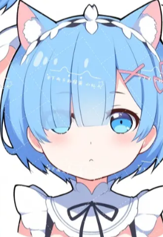

01 / HELLO
欢迎来到我的小站。这里放着我喜欢的颜色、喜欢的运动，
还有单曲循环过很多遍的那首歌。
往下滑，慢慢看。

02 / HOBBY
我最爱的运动 — 乒乓球
TABLE TENNIS
乒乓球
一颗 40 毫米的小球，一张两米七的球台。
喜欢它不只是因为好玩 — 每一板都要自己在
零点几秒里做决定，特别痛快。
-
喜欢怎么打
偏近台快攻，正手拉球是主要得分手段，接发球喜欢抢先上手。
-

为什么喜欢
节奏快、变化多，一个小球能打出旋转、落点、力量三种博弈。
-

打球的时候
什么都不用想，只盯着那颗白球。算是最纯粹的解压方式。
03 / MUSIC
一直在循环的那首歌 — 《怪咖》
NOW PLAYING
怪咖
把《怪咖》的音频文件命名为 怪咖.mp3 放进本文件夹，
再按 index.html 里的说明打开播放器，就能在这里直接听。
「 我就是个怪咖，
没什么不一样，只是有点反常。」
— 听《怪咖》的时候，总觉得被说中了